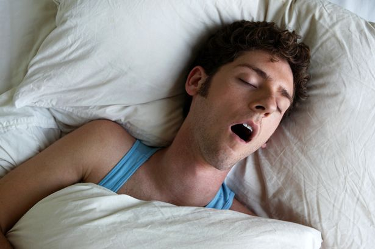
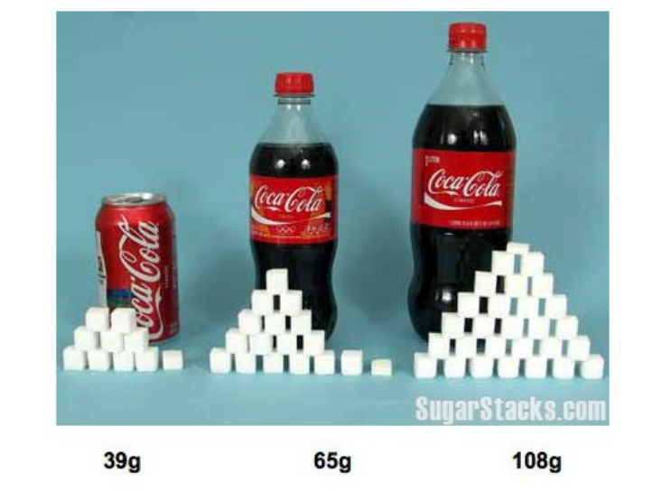
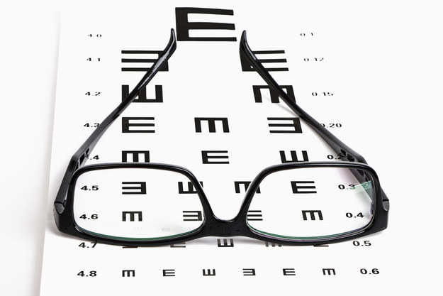
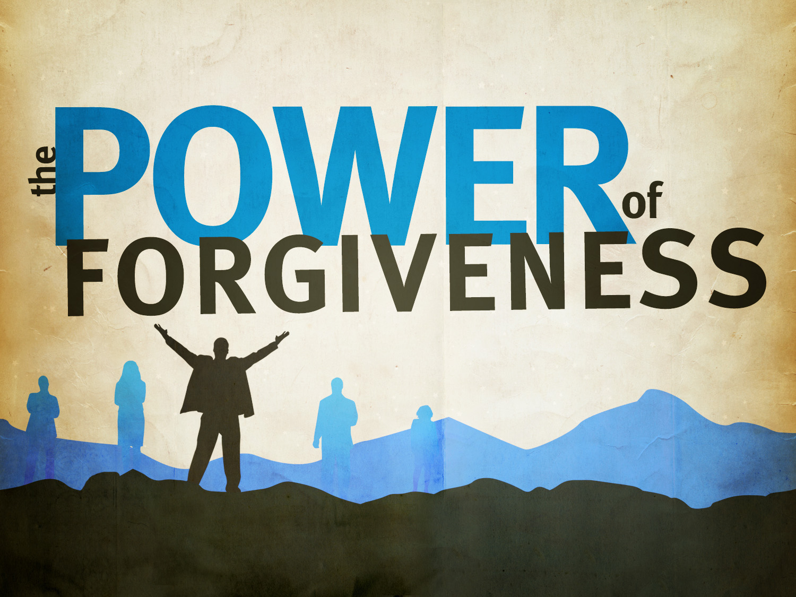

1. Get between seven and eight hours of sleep per night.

Long-term research studies show that people who get significantly less than seven hours a night die younger. In addition, some research shows that people who sleep more than nine hours also have problems.
Dr. Timothy Morgenthaler, president of the American Academy of Sleep Medicine, says
seven to eight hours is the sweet spot.
2. Get outside.

More and more research is showing just how important it is for people to be one with nature. And even just living near it helps. For instance, people who live close (within about a half-mile) to a good amount of green space are healthier than those who live farther away from it, according to a 2009 study published in the Journal of Epidemiology & Community Health. People who lived close to a high percentage of green space had fewer anxiety disorders, and fewer infectious diseases of the digestive system, among other perks. Moreover, nature is real pretty.
3. Spend time with loved ones.
What are friends and loved ones for ? Well, according to tons of research,
people who have strong social networks
(as in, loving friends and family members) reap many health benefits.
Moreover, on the flipside, people without strong social bonds tend to fare much worse.
In addition, on a totally non-scientific level: Love and friendship makes everything so much better.
Obviously. So go call your mom or Chat your friend to set up a date. You'll be glad you did.
4. Don't smoke cigarettes. And if you already smoke, Quit ASAP.
Longtime smokers lose about 10 years of their lives to the habit, according to research published in the New England Journal of Medicine. On the plus side, quitting before 35 can almost entirely eliminate that risk. So the sooner you quit, the longer you'll live.
Need a hand ? The CDC offers a list of resources to help you kick the habit.
5. Eat more fruits and veggies.
People who eat a lot of fruits and veggies also happen to have lower rates of cardiovascular disease, according to a huge study from Harvard. That's especially true if you're talking green, leafy veggies; cruciferous veggies; and citrus fruits.
6. Stop drinking soda.
For like, a billion reasons. According to research published in the American Heart Association journal Circulation, based on over 6,000 participants in the Framingham Heart Study, drinking one or more soft drinks a day is associated with:
- Greater risk of metabolic syndrome
- Larger waist circumference
- Obesity
- Impaired fasting glucose
- Higher blood pressure
- Higher levels of triglycerides (associated with high cholesterol)
7. Drink more water, in general.
It is kind of a magical substance: It helps prevent kidney stones by keeping your kidneys from working overtime. It nourishes your skin. And it's essential for people who work out, because your muscles need it to stay energized (and to function, period). Plus more great reasons.
Here are 13 easy ways to drink more water every day, if it helps !
8. Go to the doctor for all necessary checkups.
Invest in your health now to avoid paying for it bigtime down the road. That means go to the doctor and dentist as often as the experts recommend-that includes checkups for gynecological health, eye exams, full physical exams, and more.
For a complete list of health checks for all ages and genders, look here to see what the CDC recommends.
9. Only take antibiotics when you actually need them.
That means toss the Amoxicillin, stick with Tylenol, and cough suppressants if you are dealing with a cold or flu.
That's because antibiotics only treat bacterial illnesses, and are ineffective against viruses.
Moreover, the more antibiotics you take, the more you run the risk of building up a resistance to the antibiotics,
meaning they'll be less effective down the line when you may actually need them.
10. Be grateful.

Beyond just making you a happier and more pleasant person to be around, showing gratitude can also enhance long-term well-being, according to research published in the journal Applied Psychology: Health and Wellbeing. So go ahead: Use that #Blessed_hashtag_in_a_non-ironic_way.
11. Exercise daily.
Exercise and physical activity are not only good for you, they're also a fun way to spend time-a chance to unwind, to be outdoors,
to get social or to simply do something that makes you happy.
Find a physical activity you enjoy and do it every day. Better yet, find two or more types of activity to do to prevent boredom and overuse injuries.
Pace yourself according to your age and fitness level. Start with a warm up and end with cool down.
Increase time and intensity gradually. Consider exercising with a committed friend or involve your family.
A good general goal is to get at least 30 minutes of physical activity daily.
If you want to lose weight or increase your fitness level, you may need more exercise or at a higher intensity.
Bottom line, all movement counts, not just exercise.
you can check our Running Program if you want to have a good start.
12. Manage Your Stress.

Stress is not just a psychological concept, but also a physiological one. Stress isn't all bad; it helps motivate you in threatening situations.
That being said, the fast pace of modern society has led to persistent or chronic stress, which has some serious physical side effects.
Stress releases the hormone cortisol (as well as other hormones), prompting the fight-or-flight response.
Elevated cortisol has been linked to cardiovascular disease, diabetes, reduced immune function, and cognitive impairment.
Another study pointed out that cortisol increases risk of osteoporosis, intestinal problems such as ulcers,
and could potentially have negative effects on almost every regulatory system in the body.
If all of this is making you want to rip your hair out, keep in mind that stress also slows the speed of wound healing.
13. Assume that other people are friendly and have positive intentions.

Being kind to others appears to be genetically hardwired into us humans. The natural inclination that people have is to be altruistic.
Given that, doesn't it seem like a perfectly rational thing to assume that other people have positive intentions?
I think it's obvious that trusting others and assuming that they are friendly will lead to an improved social life.
There is also evidence that being more trusting is intrinsically valuable and may cause an increase in subjective well-being.
Let's forget about scientific arguments for a moment. Finding the positive qualities in other people is an important part of your personal development. As you get better at finding the positive aspects of other people, you become more proficient at finding the positive aspects of yourself. If you are interested in learning more, you can see more details on how to see the good in other people.
14. Learn to forgive others and let go of grudges.
One of the hardest things you can do is learn to forgive others who have wronged you in some way. Think for a moment about what unforgiveness actually is. The refusal to forgive someone else is a self-imposed stressor. By not forgiving someone, you are essentially punishing yourself for what the other person did to you! When put this way, doesn't holding a grudge seem like a stupid idea?
Moreover, if refusing to forgive someone is a stressor, you might expect it to have some negative health effects as well. Both forgiveness (the specific act) and forgivingness (a disposition or personality trait) have been found to improve the body's physiological response to stress through lower blood pressure, heart rate, and quicker recovery from acute stressors. A word of caution though: people who will only conditionally forgive others, such as in exchange for compensation or an apology, have increased mortality risk. You must be willing to let go of your grudge regardless of the other person's response.
Cultivating a forgiving attitude is no easy task. A helpful first step is to find the positive intention behind the other person's actions (see #13).